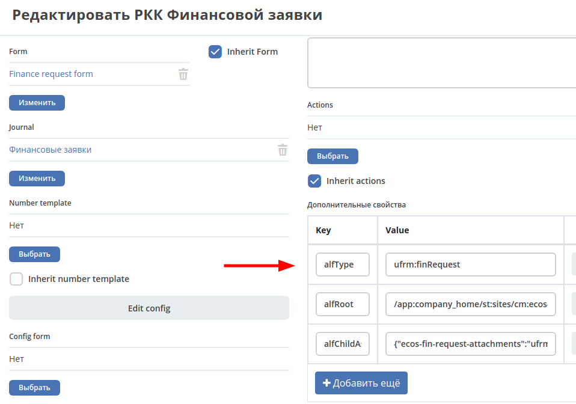

Alfresco¶
JavaScript Records API¶
Общее¶
В контексте серверного JavaScript для работы с Records API добавлен сервис Records, который доступен в глобальном контексте.
Класс сервиса: ru.citeck.ecos.records.script.RepoScriptRecordsService
В сервисе предусмотрены следующие методы:
Возвращаемое значение |
Название метода |
Аргументы (* - обязательный) |
|---|---|---|
Any (в зависимости от attributes) |
getAtts |
record*: RecordRef, attributes*: RecordAttributes |
Record |
get |
record*: RecordRef |
QueryRes |
query |
query*: RecsQuery, attributes: RecordAttributes |
Типы:
RecordRef - ссылка на запись. Допустимые значения: NodeRef, RecordRef, ScriptNode, String;
Record - инстанс записи, у которой можно запросить атрибуты или записать туда атрибуты;
QueryRes - результат поиска;
RecsQuery - запрос на поиск записей;
RecordAttributes - атрибуты для получения. Допустимо передавать String или String[] или Map<String, String>.
Возможные варианты:
Если мы передаем string, то получаем обычное значение (строка, число и тд.).
Если мы передаем массив [«aa», «bb»], то это эквивалентно объекту (Map) {"aa":"aa","bb":"cc"}
Если мы передаем объект (Map), то в результате получим тот же объект, но вместо значений исходного объекта будут значения атрибутов. Пример:
Пример:
{"disp": "cm:title"} -> {"disp": "Договор №2"}
getAtts - получить атрибуты по заранее известной записи или записям (допускается массив);
get - получить инстанс записи, с которым можно проводить операции чтения/записи атрибутов;
query - выполнить поисковый запрос для получения записей.
Описание Record:
Возвращаемое значение |
Название метода |
Аргументы (* - обязательный) |
|---|---|---|
RecordRef |
getRef |
- |
String |
getLocalId |
- |
Any (в зависимости от attributes) |
load |
attributes*: RecordAttributes |
- |
att |
name*: String, value*: Any |
Record |
save |
- |
getRef - получить RecordRef записи;
getLocalId - получить локальный идентификатор записи;
load - загрузить атрибуты из записи. Описание аргумента RecordAttributes см выше;
att - установить значение некоторого атрибута в записи. Без вызова save ничего с реальной записью не происходит;
save - сохранить изменения, которые сделаны с записью через метод att.
Методы att и save доступны с версии ecos-community-core 4.1.0
Примеры¶
Поиск записей:
var result = Records.query({
sourceId: '',
query: 'TYPE:"cm:person"',
language: 'fts-alfresco'
}, ['cm:userName', 'cm:firstName']).records;
Загрузка атрибутов записи:
var result = Records.getAtts(['people@admin', 'people@fet'], {'aa': 'cm:userName'});
---
var result = Records.get('people@admin').load(['cm:userName', 'cm:firstName']) ;
---
var result = Records.get('people@admin').load('cm:firstName');
Изменение записи:
var rec = Records.get('workspace://SpacesStore/c34da292-fa35-4593-a08b-0e3a2c675db7');
rec.att('idocs:note', 'Some Value');
rec.att('ecos:documentAmount', 123);
rec.save();
Использование Records API в условиях процесса¶
В BPMN процессе можно использовать RecordsAPI следующим образом:
В Flow Condition:
${Records.get(document).load("some-attribute?bool") == true}
Связь типов ECOS и типов Alfresco¶
В типе ECOS предусмотрены настройки для связи с Alfresco. Настройка происходит в Дополнительных свойствах.
Список настроек:
alfType - тип alfresco, который должен устанавливаться у новых сущностей с типом ECOS;
alfRoot - корневая директория, которая должна использоваться для размещения новых сущностей;
alfChildAssocs - дочерние ассоциации. Это свойство настраивается в родительском типе и в значении у него находится json объект в виде строки, где ключ - ECOS тип дочерней сущности и значение - тип дочерней ассоциации Alfresco.
Пример:
properties:
alfChildAssocs: '{"ecos-fin-request-attachments":"ufrm:requestAttachments"}'
Означает, что когда будет создана дочерняя сущность с типом ECOS ecos-fin-request-attachments, то она разместится в дочерней ассоциации ufrm:requestAttachments